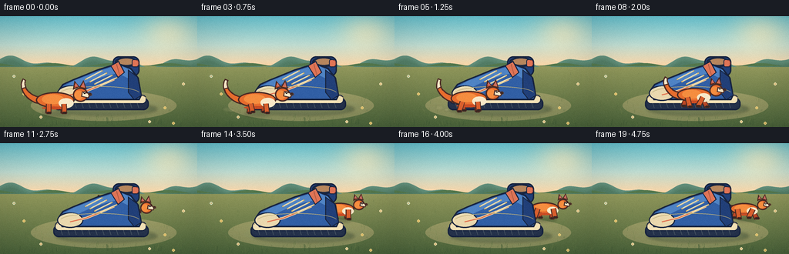
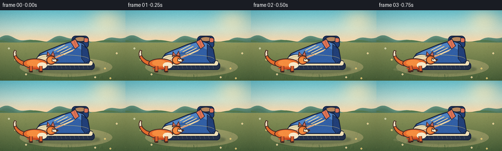

CODING AGENTS AS PIXEL WORLD MODELS
traex/DeepSeek-V4.1-Flash · dynamic_spatial_relationship_0028
点击播放 · 原生 RGB 像素
逐轮保存的候选
回放视频、检查图与代码变化。
每份候选均可单独播放。实际图片检查记录在下方工具轨迹中。
候选 01播放与检查图
点击播放 · 原生 RGB 像素


展开代码变化
--- 上一保存版本
+++ 本次保存版本
@@ -0,0 +1,580 @@
+from pathlib import Path
+import math
+import random
+
+import numpy as np
+from PIL import Image, ImageDraw, ImageFilter
+
+import artifact_io
+
+
+WIDTH = 256
+HEIGHT = 144
+FRAMES = 20
+FPS = 4.0
+S = 4
+CW = WIDTH * S
+CH = HEIGHT * S
+HORIZON = 64
+
+CASE_DIR = Path(__file__).resolve().parent
+
+
+def color(hex_value, alpha=255):
+ hex_value = hex_value.lstrip("#")
+ return tuple(int(hex_value[i:i + 2], 16) for i in (0, 2, 4)) + (alpha,)
+
+
+def blend(a, b, t):
+ return tuple(round(a[i] * (1.0 - t) + b[i] * t) for i in range(3))
+
+
+def smoothstep(a, b, value):
+ t = max(0.0, min(1.0, (value - a) / (b - a)))
+ return t * t * (3.0 - 2.0 * t)
+
+
+def px(value):
+ return int(round(value * S))
+
+
+def points(items):
+ return [(px(x), px(y)) for x, y in items]
+
+
+def make_background():
+ yy, xx = np.mgrid[0:CH, 0:CW]
+ xn = xx / S
+ yn = yy / S
+
+ sky_top = np.array([101, 190, 203], dtype=float)
+ sky_mid = np.array([190, 219, 208], dtype=float)
+ sky_low = np.array([250, 213, 167], dtype=float)
+ ground_near = np.array([73, 98, 58], dtype=float)
+ ground_far = np.array([145, 151, 91], dtype=float)
+
+ image = np.zeros((CH, CW, 3), dtype=float)
+ t = np.clip(yn / HORIZON, 0.0, 1.0)
+ lower_sky = t < 0.58
+ tt = t / 0.58
+ for channel in range(3):
+ image[:, :, channel] = np.where(
+ lower_sky,
+ sky_top[channel] * (1.0 - tt) + sky_mid[channel] * tt,
+ sky_mid[channel] * (1.0 - (t - 0.58) / 0.42)
+ + sky_low[channel] * ((t - 0.58) / 0.42),
+ )
+
+ ground_t = np.clip((yn - HORIZON) / (HEIGHT - HORIZON), 0.0, 1.0)
+ ground = (
+ ground_far[None, None, :] * (1.0 - ground_t[:, :, None])
+ + ground_near[None, None, :] * ground_t[:, :, None]
+ )
+ image = np.where((yn >= HORIZON)[:, :, None], ground, image)
+
+ sun = np.exp(-(((xn - 219.0) / 34.0) ** 2 + ((yn - 23.0) / 25.0) ** 2))
+ sun = np.clip(sun * 0.58, 0.0, 0.58)[:, :, None]
+ image = image * (1.0 - sun) + np.array([255, 236, 188])[None, None, :] * sun
+
+ # Soft distant hills use a few deterministic wave crests.
+ far_hill = HORIZON - 5.0 - 5.0 * np.sin(xn / 19.0 + 0.8) - 3.0 * np.sin(xn / 8.3)
+ near_hill = HORIZON - 1.0 - 2.2 * np.sin(xn / 12.0 + 2.2)
+ hill_mask = (yn >= far_hill) & (yn < HORIZON + 2)
+ near_mask = (yn >= near_hill) & (yn < HORIZON + 1)
+ hill_t = np.clip((yn - far_hill) / 8.0, 0.0, 1.0)[:, :, None]
+ hill_color = (
+ np.array([100, 145, 126])[None, None, :] * (1.0 - hill_t)
+ + np.array([81, 123, 100])[None, None, :] * hill_t
+ )
+ image = np.where(hill_mask[:, :, None], hill_color, image)
+ image = np.where(near_mask[:, :, None], np.array([83, 119, 77]), image)
+
+ bg = Image.fromarray(np.clip(image, 0, 255).astype(np.uint8), "RGB").convert("RGBA")
+
+ layer = Image.new("RGBA", (CW, CH), (0, 0, 0, 0))
+ draw = ImageDraw.Draw(layer, "RGBA")
+
+ # A pale earth path anchors the two objects on the same plane.
+ draw.ellipse(points([(40, 96), (229, 136)]), fill=color("#cbb982", 105))
+ draw.ellipse(points([(61, 105), (211, 130)]), fill=color("#dbc791", 88))
+
+ # Grass and wildflower details remain quiet enough to keep focus on the action.
+ rng = random.Random(1827)
+ for _ in range(310):
+ x = rng.uniform(0, WIDTH)
+ y = rng.uniform(HORIZON + 2, HEIGHT - 1)
+ if 60 < x < 210 and 88 < y < 132:
+ continue
+ length = rng.uniform(1.4, 4.4) * (0.65 + (y - HORIZON) / 100.0)
+ lean = rng.uniform(-1.2, 1.2)
+ green = rng.choice(["#58743e", "#6f8649", "#879457", "#465f36"])
+ draw.line(
+ [(px(x), px(y)), (px(x + lean), px(y - length))],
+ fill=color(green, rng.randint(85, 155)),
+ width=max(1, px(0.35)),
+ )
+ for x, y, tone in [
+ (31, 101, "#f2d783"), (53, 131, "#f7e5b1"), (214, 119, "#f2d783"),
+ (238, 88, "#f7e5b1"), (18, 78, "#d9e4c2"), (194, 137, "#f7e5b1"),
+ (225, 139, "#f2d783"),
+ ]:
+ draw.line([(px(x), px(y + 2.4)), (px(x), px(y))], fill=color("#526d3e", 180), width=px(0.4))
+ for dx, dy in [(-1.2, 0), (1.2, 0), (0, -1.2), (0, 1.2)]:
+ draw.ellipse(
+ [(px(x + dx - 0.9), px(y + dy - 0.9)), (px(x + dx + 0.9), px(y + dy + 0.9))],
+ fill=color(tone, 235),
+ )
+ draw.ellipse([(px(x - 0.55), px(y - 0.55)), (px(x + 0.55), px(y + 0.55))], fill=color("#d39c45"))
+
+ return Image.alpha_composite(bg, layer)
+
+
+def shadow_layer(fox_x, fox_y, fox_scale, frame_index):
+ layer = Image.new("RGBA", (CW, CH), (0, 0, 0, 0))
+ draw = ImageDraw.Draw(layer, "RGBA")
+
+ # Long, soft shoe shadow from the low warm light.
+ draw.ellipse(points([(72, 112), (204, 129)]), fill=color("#263b2c", 92))
+ draw.ellipse(points([(86, 116), (195, 127)]), fill=color("#243529", 56))
+
+ depth = smoothstep(112.0, 128.0, fox_y)
+ shadow_alpha = int(78 - depth * 12)
+ shadow_w = 38 * fox_scale
+ shadow_h = 6.5 * fox_scale
+ cx = fox_x + 1.0
+ cy = fox_y + 1.2
+ draw.ellipse(
+ [(px(cx - shadow_w / 2), px(cy - shadow_h / 2)),
+ (px(cx + shadow_w / 2), px(cy + shadow_h / 2))],
+ fill=color("#263829", shadow_alpha),
+ )
+
+ layer = layer.filter(ImageFilter.GaussianBlur(px(1.8)))
+ return layer
+
+
+def tapered_curve(draw, curve, start_width, end_width, fill, outline, outline_width=2.2):
+ pts = [(px(x), px(y)) for x, y in curve]
+ left = []
+ right = []
+ for index, point in enumerate(pts):
+ if index == 0:
+ dx = pts[1][0] - point[0]
+ dy = pts[1][1] - point[1]
+ elif index == len(pts) - 1:
+ dx = point[0] - pts[index - 1][0]
+ dy = point[1] - pts[index - 1][1]
+ else:
+ dx = pts[index + 1][0] - pts[index - 1][0]
+ dy = pts[index + 1][1] - pts[index - 1][1]
+ length = max(1.0, math.hypot(dx, dy))
+ nx, ny = -dy / length, dx / length
+ t = index / (len(pts) - 1)
+ half = (start_width * (1.0 - t) + end_width * t) * S / 2.0
+ left.append((point[0] + nx * half, point[1] + ny * half))
+ right.append((point[0] - nx * half, point[1] - ny * half))
+ polygon = left + list(reversed(right))
+ draw.polygon(polygon, fill=fill, outline=outline, width=px(outline_width))
+
+
+def cubic_points(p0, p1, p2, p3, count=20):
+ result = []
+ for i in range(count):
+ t = i / (count - 1)
+ mt = 1.0 - t
+ x = mt ** 3 * p0[0] + 3 * mt * mt * t * p1[0] + 3 * mt * t * t * p2[0] + t ** 3 * p3[0]
+ y = mt ** 3 * p0[1] + 3 * mt * mt * t * p1[1] + 3 * mt * t * t * p2[1] + t ** 3 * p3[1]
+ result.append((x, y))
+ return result
+
+
+def draw_leg(draw, origin, hip, phase, stride, near, running):
+ ox, oy = origin
+ hip_x, hip_y = hip
+ if running:
+ swing = math.sin(phase)
+ lift = max(0.0, math.cos(phase)) * 2.2
+ knee = (hip_x + swing * stride * 0.55, -5.3 - lift * 0.55)
+ paw = (hip_x + swing * stride, -lift * 0.62)
+ else:
+ swing = math.sin(phase) * 0.25
+ knee = (hip_x + swing, -5.2)
+ paw = (hip_x + swing * 1.5, 0.0)
+
+ def tp(point):
+ return (ox + point[0], oy + point[1])
+
+ hip_p, knee_p, paw_p = tp((hip_x, hip_y)), tp(knee), tp(paw)
+ outline = color("#4c2a22", 255)
+ leg_fill = color("#d95f2d" if near else "#b94726", 255)
+ width = (5.2 if near else 4.7) * S
+ for a, b in [(hip_p, knee_p), (knee_p, paw_p)]:
+ draw.line(
+ [(px(a[0]), px(a[1])), (px(b[0]), px(b[1]))],
+ fill=outline,
+ width=int(width + 2.2 * S),
+ )
+ for a, b in [(hip_p, knee_p), (knee_p, paw_p)]:
+ draw.line(
+ [(px(a[0]), px(a[1])), (px(b[0]), px(b[1]))],
+ fill=leg_fill,
+ width=int(width),
+ )
+ foot_box = [
+ (px(paw_p[0] - 2.4), px(paw_p[1] - 1.9)),
+ (px(paw_p[0] + 3.8), px(paw_p[1] + 1.1)),
+ ]
+ draw.rounded_rectangle(foot_box, radius=px(1.5), fill=color("#342522"), outline=outline, width=px(0.7))
+
+
+def draw_fox(draw, fox_x, fox_y, scale, phase, running, head_turn=0.0):
+ def p(x, y):
+ return (fox_x + x * scale, fox_y + y * scale)
+
+ def box(x0, y0, x1, y1):
+ a = p(x0, y0)
+ b = p(x1, y1)
+ return [(px(a[0]), px(a[1])), (px(b[0]), px(b[1]))]
+
+ def polygon(items, fill, outline=None, width=1.5):
+ draw.polygon(points([p(x, y) for x, y in items]), fill=fill, outline=outline, width=px(width))
+
+ def ellipse(x0, y0, x1, y1, fill, outline=None, width=1.5):
+ draw.ellipse(box(x0, y0, x1, y1), fill=fill, outline=outline, width=px(width))
+
+ outline = color("#4b2a24", 255)
+ orange = color("#e76d2e", 255)
+ orange_light = color("#f58d3f", 255)
+ orange_dark = color("#c94c24", 255)
+ cream = color("#f8e8c8", 255)
+
+ # Far legs first, then tail, body, near legs, and head.
+ draw_leg(draw, p(0, 0), (-10, -12), phase + math.pi * 0.92, 7.0, False, running)
+ draw_leg(draw, p(0, 0), (10, -12), phase + math.pi * 1.78, 7.2, False, running)
+
+ tail_wave = math.sin(phase * 0.55) * (2.0 if running else 1.2)
+ tail = cubic_points(
+ (-20, -17),
+ (-34, -18 - tail_wave),
+ (-48, -33 + tail_wave),
+ (-41, -45 - tail_wave * 0.35),
+ 22,
+ )
+ tail_screen = [p(x, y) for x, y in tail]
+ tapered_curve(draw, tail_screen, 10.5, 5.0, orange, outline, 1.7)
+ tip = tail_screen[int(len(tail_screen) * 0.68):]
+ tapered_curve(draw, tip, 7.2, 4.6, cream, outline, 1.5)
+
+ # Slight body bob makes the run legible at four frames per second.
+ bob = -abs(math.sin(phase)) * (1.8 if running else 0.25)
+ body_y = bob
+ ellipse(-26, -28 + body_y, 25, -7 + body_y, orange, outline, 1.8)
+ ellipse(-18, -25 + body_y, 11, -12 + body_y, orange_light, None)
+ ellipse(-18, -9 + body_y, 16, -5 + body_y, orange_dark, None)
+ ellipse(4, -20 + body_y, 24, -7 + body_y, cream, None)
+
+ draw_leg(draw, p(0, 0), (-9, -12 + body_y), phase, 7.5, True, running)
+ draw_leg(draw, p(0, 0), (11, -12 + body_y), phase + math.pi * 0.83, 7.8, True, running)
+
+ # Ears sit behind the head silhouette.
+ polygon([(23, -31 + body_y), (25, -43 + body_y), (32, -35 + body_y)], orange_dark, outline, 1.5)
+ polygon([(31, -34 + body_y), (37, -44 + body_y), (41, -32 + body_y)], orange, outline, 1.5)
+ polygon([(25, -36 + body_y), (27, -40 + body_y), (30, -35 + body_y)], color("#c96d62"), None)
+ polygon([(34, -36 + body_y), (37, -41 + body_y), (39, -34 + body_y)], color("#c96d62"), None)
+
+ head_shift = head_turn
+ ellipse(23 + head_shift, -34 + body_y, 43 + head_shift, -15 + body_y, orange, outline, 1.8)
+ ellipse(25 + head_shift, -30 + body_y, 37 + head_shift, -18 + body_y, orange_light, None)
+ polygon(
+ [(35 + head_shift, -29 + body_y), (47 + head_shift, -26 + body_y),
+ (44 + head_shift, -20 + body_y), (34 + head_shift, -22 + body_y)],
+ cream,
+ outline,
+ 1.35,
+ )
+ ellipse(43 + head_shift, -27 + body_y, 48 + head_shift, -23 + body_y, color("#342522"), outline, 1.0)
+ draw.ellipse(
+ [(px(fox_x + (37.0 + head_shift) * scale), px(fox_y + (-29.0 + body_y) * scale)),
+ (px(fox_x + (40.0 + head_shift) * scale), px(fox_y + (-25.5 + body_y) * scale))],
+ fill=color("#2b2020"),
+ )
+ draw.ellipse(
+ [(px(fox_x + (38.1 + head_shift) * scale), px(fox_y + (-28.2 + body_y) * scale)),
+ (px(fox_x + (39.2 + head_shift) * scale), px(fox_y + (-27.0 + body_y) * scale))],
+ fill=color("#fff9e9"),
+ )
+ mouth_start = p(44 + head_shift, -22.4 + body_y)
+ mouth_mid = p(42.5 + head_shift, -20.8 + body_y)
+ draw.line(
+ [(px(mouth_start[0]), px(mouth_start[1])), (px(mouth_mid[0]), px(mouth_mid[1]))],
+ fill=color("#5d3027", 220),
+ width=px(0.55),
+ )
+ for y_off in (-24.7, -22.7):
+ a = p(43.8 + head_shift, y_off + body_y)
+ b = p(49.3 + head_shift, y_off - 0.8 + body_y)
+ draw.line(
+ [(px(a[0]), px(a[1])), (px(b[0]), px(b[1]))],
+ fill=color("#5d3027", 150),
+ width=px(0.35),
+ )
+
+
+def draw_shoe(draw):
+ outline = color("#17233e", 255)
+ sole_dark = color("#24314a", 255)
+ sole_cream = color("#f0dfb5", 255)
+ blue = color("#315fa5", 255)
+ blue_light = color("#4f83c4", 255)
+ blue_dark = color("#213f78", 255)
+ coral = color("#df7456", 255)
+ gold = color("#e6c878", 255)
+
+ # Ground contact and thick rubber outsole.
+ draw.rounded_rectangle(
+ [(px(69), px(106)), (px(193), px(122))],
+ radius=px(7),
+ fill=sole_dark,
+ outline=outline,
+ width=px(1.8),
+ )
+ draw.rounded_rectangle(
+ [(px(71), px(102)), (px(190), px(114))],
+ radius=px(5.5),
+ fill=sole_cream,
+ outline=outline,
+ width=px(1.3),
+ )
+ draw.arc(
+ [(px(72), px(98)), (px(190), px(116))],
+ start=184,
+ end=356,
+ fill=color("#c6ab78", 230),
+ width=px(1.1),
+ )
+ for x in range(79, 187, 9):
+ draw.line(
+ [(px(x), px(113)), (px(x + 2), px(119))],
+ fill=color("#425068", 210),
+ width=px(0.85),
+ )
+
+ # High collar is drawn first so the main upper can overlap it cleanly.
+ draw.rounded_rectangle(
+ [(px(146), px(52)), (px(181), px(78))],
+ radius=px(8),
+ fill=blue_dark,
+ outline=outline,
+ width=px(1.8),
+ )
+ draw.ellipse(
+ [(px(149), px(53)), (px(178), px(66))],
+ fill=color("#1b2944"),
+ outline=outline,
+ width=px(1.3),
+ )
+ draw.ellipse(
+ [(px(153), px(55)), (px(175), px(63))],
+ fill=color("#b7865d"),
+ )
+
+ upper = [
+ (77, 102), (76, 95), (81, 88), (94, 82), (109, 76),
+ (126, 69), (142, 64), (157, 62), (170, 67), (180, 80),
+ (184, 103), (181, 109), (80, 109),
+ ]
+ draw.polygon(points(upper), fill=blue, outline=outline, width=px(1.9))
+ draw.polygon(
+ points([
+ (81, 92), (95, 84), (111, 78), (129, 71), (145, 66),
+ (158, 65), (170, 70), (176, 80), (165, 80), (153, 74),
+ (139, 77), (123, 82), (107, 89), (94, 96), (84, 100),
+ ]),
+ fill=blue_light,
+ )
+
+ # Toe cap, heel reinforcement, tongue, and side stripe.
+ draw.ellipse(
+ [(px(74), px(90)), (px(108), px(110))],
+ fill=color("#ead8ae"),
+ outline=outline,
+ width=px(1.6),
+ )
+ draw.arc(
+ [(px(77), px(91)), (px(108), px(108))],
+ start=196,
+ end=312,
+ fill=color("#f8ecc9", 220),
+ width=px(1.3),
+ )
+ draw.polygon(
+ points([(166, 69), (179, 79), (184, 103), (174, 109), (166, 99)]),
+ fill=blue_dark,
+ outline=outline,
+ width=px(1.3),
+ )
+ draw.polygon(
+ points([(143, 64), (154, 58), (162, 73), (153, 80)]),
+ fill=coral,
+ outline=outline,
+ width=px(1.25),
+ )
+ draw.line(
+ [(px(151), px(62)), (px(155), px(76))],
+ fill=color("#b9503e", 210),
+ width=px(0.9),
+ )
+ draw.line(
+ [(px(91), px(102)), (px(112), px(97)), (px(132), px(89)), (px(148), px(82))],
+ fill=color("#f1d9a4"),
+ width=px(3.3),
+ )
+ draw.line(
+ [(px(91), px(102)), (px(112), px(97)), (px(132), px(89)), (px(148), px(82))],
+ fill=coral,
+ width=px(1.55),
+ )
+
+ # Laces and eyelets follow the rising vamp.
+ lace_segments = [
+ ((111, 82), (132, 71)),
+ ((117, 85), (138, 74)),
+ ((123, 88), (145, 77)),
+ ((129, 91), (151, 80)),
+ ]
+ for start, end in lace_segments:
+ draw.line(
+ [(px(start[0]), px(start[1])), (px(end[0]), px(end[1]))],
+ fill=color("#f6e5b6"),
+ width=px(1.8),
+ )
+ draw.line(
+ [(px(start[0] + 1.4), px(start[1] - 0.6)), (px(end[0] + 1.4), px(end[1] - 0.6))],
+ fill=color("#c9aa68", 190),
+ width=px(0.55),
+ )
+ for x, y in [(111, 82), (117, 85), (123, 88), (129, 91), (132, 71), (138, 74), (145, 77), (151, 80)]:
+ draw.ellipse(
+ [(px(x - 1.0), px(y - 1.0)), (px(x + 1.0), px(y + 1.0))],
+ fill=color("#e8cc84"),
+ outline=color("#7d663f"),
+ width=px(0.35),
+ )
+
+ # Stitching and a small heel pull tab add a finished sneaker read.
+ draw.arc(
+ [(px(78), px(91)), (px(181), px(109))],
+ start=188,
+ end=352,
+ fill=color("#d9c18b", 180),
+ width=px(0.65),
+ )
+ draw.rounded_rectangle(
+ [(px(171), px(56)), (px(180), px(66))],
+ radius=px(2.4),
+ fill=coral,
+ outline=outline,
+ width=px(1.1),
+ )
+ draw.arc(
+ [(px(174), px(57)), (px(180), px(65))],
+ start=250,
+ end=75,
+ fill=color("#9e4437"),
+ width=px(0.8),
+ )
+
+
+def dust_layer(fox_x, fox_y, scale, frame_index, running):
+ layer = Image.new("RGBA", (CW, CH), (0, 0, 0, 0))
+ if not running:
+ return layer
+ draw = ImageDraw.Draw(layer, "RGBA")
+ puff_count = 3
+ for index in range(puff_count):
+ age = (frame_index - 3 - index * 2) % 7
+ if frame_index < 3 or age < 0:
+ continue
+ alpha = int(65 * (1.0 - age / 8.0))
+ if alpha <= 0:
+ continue
+ x = fox_x - 25 * scale - age * 3.1
+ y = fox_y - 1.0 - age * 0.8
+ radius = (2.0 + age * 0.75) * scale
+ draw.ellipse(
+ [(px(x - radius), px(y - radius * 0.55)), (px(x + radius), px(y + radius * 0.55))],
+ fill=color("#e9d6a4", alpha),
+ )
+ return layer.filter(ImageFilter.GaussianBlur(px(1.1)))
+
+
+def make_frame(index):
+ x_keys = [72, 72, 73, 78, 86, 97, 109, 121, 133, 144, 154, 163, 171, 178, 185, 191, 195, 197, 198, 198]
+ y_keys = [126, 126, 126, 126, 125, 124, 123, 121, 118, 114, 109, 105, 102, 100, 99, 98, 98, 98, 98, 98]
+ scale_keys = [0.98, 0.98, 0.98, 0.97, 0.95, 0.93, 0.91, 0.89, 0.87, 0.85,
+ 0.83, 0.81, 0.79, 0.77, 0.75, 0.74, 0.73, 0.72, 0.72, 0.72]
+
+ fox_x = x_keys[index]
+ fox_y = y_keys[index]
+ fox_scale = scale_keys[index]
+ running = index >= 3
+ phase = 0.55 * math.pi * (index - 3) + 0.35 if running else 0.18 * index
+ head_turn = 0.5 * math.sin(index * 0.65) if running else 0.2 * math.sin(index * 0.8)
+
+ frame = make_background()
+ frame = Image.alpha_composite(frame, shadow_layer(fox_x, fox_y, fox_scale, index))
+ frame = Image.alpha_composite(frame, dust_layer(fox_x, fox_y, fox_scale, index, running))
+
+ action = Image.new("RGBA", (CW, CH), (0, 0, 0, 0))
+ action_draw = ImageDraw.Draw(action, "RGBA")
+
+ if index < 10:
+ draw_shoe(action_draw)
+ draw_fox(action_draw, fox_x, fox_y, fox_scale, phase, running, head_turn)
+ else:
+ draw_fox(action_draw, fox_x, fox_y, fox_scale, phase, running, head_turn)
+ draw_shoe(action_draw)
+
+ frame = Image.alpha_composite(frame, action)
+
+ # Foreground grass softens the lower edge without covering the subjects.
+ foreground = Image.new("RGBA", (CW, CH), (0, 0, 0, 0))
+ fg = ImageDraw.Draw(foreground, "RGBA")
+ rng = random.Random(991 + index * 0)
+ for _ in range(34):
+ x = rng.uniform(0, WIDTH)
+ y = rng.uniform(139, 145)
+ h = rng.uniform(3.0, 9.0)
+ fg.line(
+ [(px(x), px(y)), (px(x + rng.uniform(-1.5, 1.5)), px(y - h))],
+ fill=color("#3f5835", rng.randint(120, 195)),
+ width=px(rng.uniform(0.45, 0.9)),
+ )
+ frame = Image.alpha_composite(frame, foreground)
+
+ # Subtle vignette and final downsample give a clean, filmic finish.
+ yy, xx = np.mgrid[0:CH, 0:CW]
+ xn = (xx - CW / 2) / (CW / 2)
+ yn = (yy - CH / 2) / (CH / 2)
+ vignette = np.clip((xn * xn * 0.36 + yn * yn * 0.28) - 0.18, 0.0, 0.65)
+ rgb = np.asarray(frame.convert("RGB"), dtype=float)
+ rgb *= (1.0 - vignette[:, :, None] * 0.22)
+
+ frame = Image.fromarray(np.clip(rgb, 0, 255).astype(np.uint8), "RGB")
+ frame = frame.resize((WIDTH, HEIGHT), Image.Resampling.LANCZOS)
+
+ final = np.asarray(frame, dtype=np.int16)
+ grain_rng = np.random.default_rng(2701 + index)
+ grain = grain_rng.integers(-2, 3, size=(HEIGHT, WIDTH, 1), dtype=np.int16)
+ final = np.clip(final + grain, 0, 255).astype(np.uint8)
+ return final
+
+
+def main():
+ frames = np.stack([make_frame(index) for index in range(FRAMES)])
+ artifact_io.save(frames, CASE_DIR)
+ print(f"Saved {frames.shape} RGB frames to {CASE_DIR}")
+
+
+if __name__ == "__main__":
+ main()
候选 02播放与检查图
点击播放 · 原生 RGB 像素
展开代码变化
--- 上一保存版本
+++ 本次保存版本
@@ -89,7 +89,7 @@
image = np.where(hill_mask[:, :, None], hill_color, image)
image = np.where(near_mask[:, :, None], np.array([83, 119, 77]), image)
- bg = Image.fromarray(np.clip(image, 0, 255).astype(np.uint8), "RGB").convert("RGBA")
+ bg = Image.fromarray(np.clip(image, 0, 255).astype(np.uint8)).convert("RGBA")
layer = Image.new("RGBA", (CW, CH), (0, 0, 0, 0))
draw = ImageDraw.Draw(layer, "RGBA")
@@ -560,7 +560,7 @@
rgb = np.asarray(frame.convert("RGB"), dtype=float)
rgb *= (1.0 - vignette[:, :, None] * 0.22)
- frame = Image.fromarray(np.clip(rgb, 0, 255).astype(np.uint8), "RGB")
+ frame = Image.fromarray(np.clip(rgb, 0, 255).astype(np.uint8))
frame = frame.resize((WIDTH, HEIGHT), Image.Resampling.LANCZOS)
final = np.asarray(frame, dtype=np.int16)
可观测工具轨迹
实际执行的命令与返回图片。
命令 1exit 0
/bin/bash -c "pwd && rg --files -g '"'!*__pycache__*'"' | sed -n '1,200p'"
命令 2exit 0
/bin/bash -c 'cat prompt.txt'
命令 3exit 0
/bin/bash -c 'cat GENERATION_RULES.md'
命令 4exit 0
/bin/bash -c 'cat task_spec.json'
命令 5exit 0
/bin/bash -c "ls -la && find . -maxdepth 2 -type f | sort | sed -n '1,240p'"
命令 6exit 0
/bin/bash -c "sed -n '1,260p' artifact_io.py"
命令 7exit 0
/bin/bash -c "sed -n '1,260p' player_template.html"
命令 8exit 0
/bin/bash -c "python - <<'PY' import importlib.util for m in ['numpy','PIL','imageio','cv2','matplotlib','scipy']: print(m, bool(importlib.util.find_spec(m))) PY"
命令 9exit 0
/bin/bash -c 'command -v ffmpeg || true; command -v ffprobe || true'
命令 10exit 0
/bin/bash -c 'python generate.py'
命令 11exit 0
/bin/bash -c 'command -v chafa || true; command -v viu || true; command -v img2txt || true; command -v jp2 || true'
命令 12exit 0
/bin/bash -c "find . -maxdepth 2 -type f -printf '%p %s bytes\\n' | sort"
命令 13exit 0
/bin/bash -c "python - <<'PY'
from PIL import Image
import numpy as np
for f in ['frames/00.png','frames/03.png','frames/08.png','frames/10.png','frames/15.png','frames/19.png']:
im=np.asarray(Image.open(f).convert('RGB')).astype(float)
print(f, 'mean', im.mean((0,1)).round(1), 'std', im.std((0,1)).round(1), 'unique', len(np.unique(im.reshape(-1,3),axis=0)))
PY"命令 14exit 0
/bin/bash -c "python - <<'PY'
from PIL import Image
# 2x downscale, map luminance and hue to ANSI truecolor half-block in a 96x27 display.
for fn in ['frames/00.png','frames/08.png','frames/10.png','frames/19.png']:
im=Image.open(fn).convert('RGB').resize((96,27), Image.Resampling.LANCZOS)
a=list(im.getdata())
print('\\n###',fn)
for y in range(0,27,2):
out=[]
for x in range(96):
top=a[y*96+x]; bot=a[min(y+1,26)*96+x]
out.append(f'\\x1b[38;2;{top[0]};{top[1]};{top[2]}m\\x1b[48;2;{bot[0]};{bot[1]};{bot[2]}mâ')
print(''.join(out)+'\\x1b[0m')
PY"命令 15exit 0
/bin/bash -c "python - <<'PY'
from PIL import Image
import numpy as np
pal=np.array([[102,190,203],[240,215,172],[105,145,100],[110,100,75],[35,80,165],[225,110,50],[235,225,195],[35,35,40]])
ch='~.g-BFO#'
for fn in ['frames/00.png','frames/06.png','frames/09.png','frames/10.png','frames/12.png','frames/19.png']:
im=np.asarray(Image.open(fn).convert('RGB').resize((128,72),Image.Resampling.LANCZOS)).astype(float)
# nearest palette but bias dark and saturated
d=((im[:,:,None,:]-pal[None,None,:,:])**2).sum(3)
ix=d.argmin(2)
print('\\n',fn)
for y in range(72):
print(''.join(ch[i] for i in ix[y]))
PY"命令 16exit 0
/bin/bash -c "python - <<'PY'
from PIL import Image
import numpy as np
frames=[np.asarray(Image.open(f'frames/{i:02d}.png').convert('RGB')).astype(float) for i in range(20)]
print('consecutive MAE:')
for i in range(1,20):
print(i, round(np.abs(frames[i]-frames[i-1]).mean(),2), end='; ')
print('\\nfirst-last MAE', round(np.abs(frames[-1]-frames[0]).mean(),2))
# Estimate object masks by nearest distinctive colors.
for i in [0,5,9,10,15,19]:
im=frames[i]
r,g,b=im[:,:,0],im[:,:,1],im[:,:,2]
orange=(r>150)&(r>g*1.25)&(g>b*1.2)
blue=(b>80)&(b>r*1.25)&(b>g*1.08)
ys,xs=np.where(orange); yb,xb=np.where(blue)
print(i,'fox', (xs.min(),ys.min(),xs.max(),ys.max(),len(xs)),'shoe',(xb.min(),yb.min(),xb.max(),yb.max(),len(xb)),'overlap',((orange&blue).sum()))
PY"命令 17exit 0
/bin/bash -c "python - <<'PY'
from PIL import Image
import numpy as np, colorsys
chars={'bg':' ','dark':'#','blue':'B','orange':'O','cream':'F','green':'g','brown':'b','sky':'.'}
for fi in [0,6,9,10,14,19]:
im=np.asarray(Image.open(f'frames/{fi:02d}.png').convert('RGB')).astype(float)/255
mx=im.max(2); mn=im.min(2); df=mx-mn
hue=np.zeros_like(mx)
idx=df>1e-5
# vectorized hue
r,g,b=[im[:,:,i] for i in range(3)]
m=idx&(mx==r); hue[m]=((g[m]-b[m])/df[m])%6
m=idx&(mx==g); hue[m]=(b[m]-r[m])/df[m]+2
m=idx&(mx==b); hue[m]=(r[m]-g[m])/df[m]+4
hue*=60; sat=np.where(mx>0,df/mx,0)
blue=(hue>185)&(hue<250)&(sat>.28)&(mx>.25)
orange=(hue>8)&(hue<38)&(sat>.42)&(r>.45)
dark=(mx<.29)
cream=(sat<.24)&(mx>.62)
green=(hue>50)&(hue<150)&(sat>.15)
brown=(hue>10)&(hue<55)&(sat>.15)&(r>.30)&(mx<.7)
# 2x2 block majority priority objects
print('\\nFRAME',fi)
for y in range(44,136,2):
s=''
for x in range(20,240,2):
cnt=[('B',blue[y:y+2,x:x+2].sum()),('O',orange[y:y+2,x:x+2].sum()),('#',dark[y:y+2,x:x+2].sum()),('F',cream[y:y+2,x:x+2].sum()),('g',green[y:y+2,x:x+2].sum()),('b',brown[y:y+2,x:x+2].sum())]
cnt.sort(reverse=True)
s+=cnt[0][0] if cnt[0][1]>=2 else ' '
print(s.rstrip())
PY"命令 18exit 0
/bin/bash -c "python - <<'PY'
from PIL import Image
import numpy as np
# xterm-256 palette
rgb=[]
for i in range(16): rgb.append(((0,0,0),(128,0,0),(0,128,0),(128,128,0),(0,0,128),(128,0,128),(0,128,128),(192,192,192),(128,128,128),(255,0,0),(0,255,0),(255,255,0),(0,0,255),(255,0,255),(0,255,255),(255,255,255))[i])
levels=[0,95,135,175,215,255]
for r in levels:
for g in levels:
for b in levels: rgb.append((r,g,b))
for i in range(24):
v=8+i*10; rgb.append((v,v,v))
rgb=np.array(rgb)
def ansi_pixels(im):
a=np.asarray(im.convert('RGB').resize((64,36),Image.Resampling.LANCZOS)).astype(int)
d=((a[:,:,None,:]-rgb[None,None,:,:])**2).sum(3)
return d.argmin(2)
for fn in ['frames/00.png','frames/05.png','frames/08.png','frames/10.png','frames/14.png','frames/19.png']:
ix=ansi_pixels(Image.open(fn))
print('\\n### '+fn)
for y in range(0,36,2):
out=[]
for x in range(64):
out.append(f'\\x1b[38;5;{ix[y,x]}m\\x1b[48;5;{ix[min(y+1,35),x]}mâ')
print(''.join(out)+'\\x1b[0m')
PY"命令 19exit 0
/bin/bash -c "python - <<'PY'
from PIL import Image, ImageDraw
import generate as g
import numpy as np
def layer_mask(kind, x,y,s,phase=0,run=False):
im=Image.new('RGBA',(g.CW,g.CH),(0,0,0,0)); d=ImageDraw.Draw(im,'RGBA')
if kind=='shoe': g.draw_shoe(d)
else: g.draw_fox(d,x,y,s,phase,run,0)
return np.asarray(im)[:,:,3]>0
for i in [0,5,9,10,15,19]:
x=[72,72,73,78,86,97,109,121,133,144,154,163,171,178,185,191,195,197,198,198][i]
y=[126,126,126,126,125,124,123,121,118,114,109,105,102,100,99,98,98,98,98,98][i]
s=[.98,.98,.98,.97,.95,.93,.91,.89,.87,.85,.83,.81,.79,.77,.75,.74,.73,.72,.72,.72][i]
fm=layer_mask('fox',x,y,s,0.3,i>=3); sm=layer_mask('shoe',0,0,1)
# Effective visible fox mask depends on composition order.
if i<10:
vis=fm; hidden=(fm & sm).sum()
else:
vis=fm & ~sm; hidden=(fm & sm).sum()
ys,xs=np.where(fm)
print(f'{i:02d}: fox px={fm.sum()}, hidden={hidden}, visible={vis.sum()}, bbox=({xs.min()},{ys.min()},{xs.max()},{ys.max()})')
PY"命令 20exit 0
/bin/bash -c "python generate.py && python -m py_compile generate.py && python - <<'PY'
from pathlib import Path
from PIL import Image
import numpy as np, json
spec=json.loads(Path('task_spec.json').read_text())
files=sorted(Path('frames').glob('*.png'))
assert len(files)==spec['frames']
for p in files:
im=Image.open(p)
assert im.size==(spec['width'],spec['height']) and im.mode=='RGB'
z=np.load('pixels.npz')['pixels']
assert z.shape==(spec['height'],spec['width'],spec['frames']) and z.dtype==np.uint32
print('validated', len(files), 'frames;', im.size, im.mode, '; pixels.npz', z.shape, '; index.html', Path('index.html').stat().st_size, 'bytes')
PY"保存候选 2 份；完成命令 20 次；可验证图片返回 0 张。原始 API 响应与完整日志保留在本地。